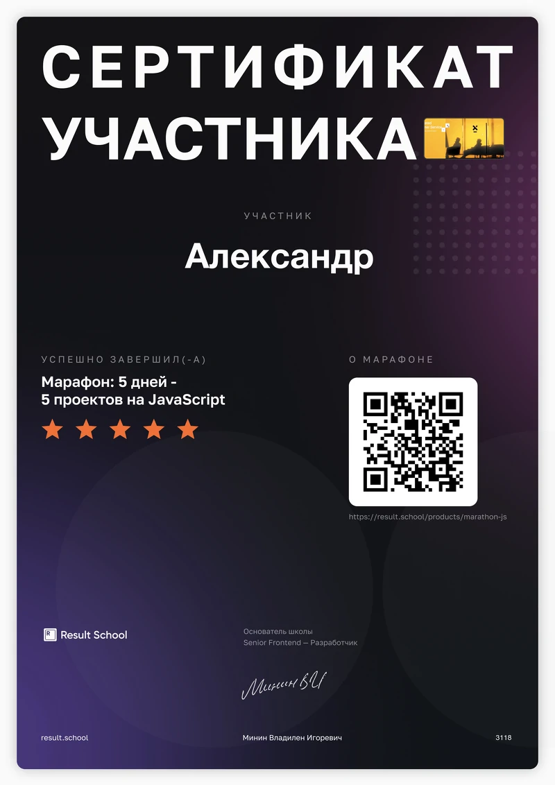
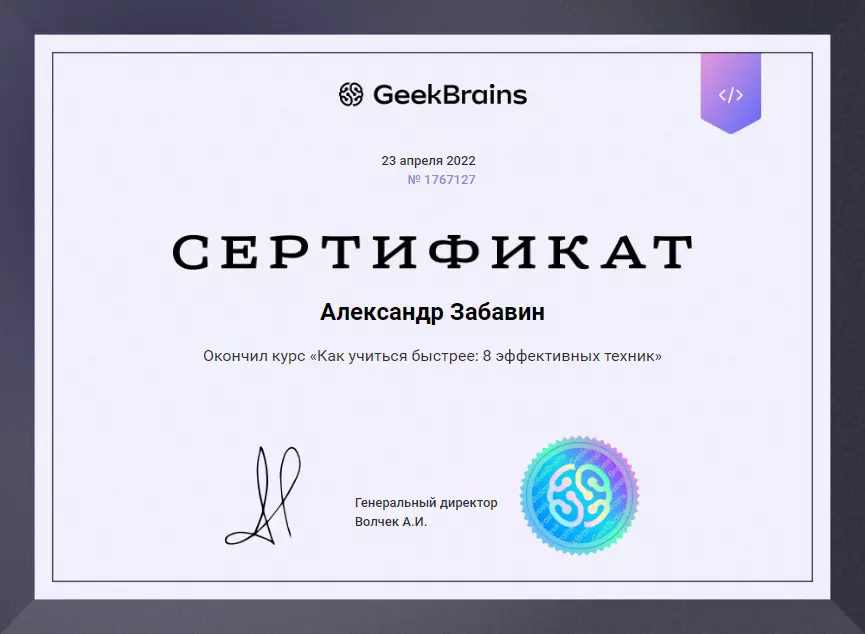

Верстальщик сайтов / front-end разработчик
(Системный инженер / администратор)
Hard skills
Создание лендингов и сайтов
HTML, CSS, SASS/SCSS, БЕМ, FLEX, GRID
Адаптивная и кроссбраузерная вёрстка
Правка и оптимизация кода и изображений
Базовые знания JavaScript
Работаю с Tilda и Figma
Хорошее владение: Adobe Photoshop, Adobe Premiere, DaVinci Resolve, MS Office
Работаю с PixelPerfect и GitHub
Организация и настройка рабочих мест и ЛС
Установка и обслуживание перефирийных устройств
Проведение блочного ремонта
Составление ТЗ, МИ, презентаций
Soft skills
Обучаемость и саморазвитие
Адаптивность
Тайм-менеджмент
Стрессоустойчивость
Критическое мышление
Креативность
Грамотная речь и письмо
Период обучения
Май 2022г. - по настоящее время
Учебное заведение
Профильные курсы "GeekBrains"
Специальность
WEB-разработчик (HTML / CSS / JavaScript / PHP)
Сертификаты
- Марафон: 5 дней - 5 проектов на JavaScript. Диплом №3118 сертификат 
- Основы программирования сертификат
- Лекции по основам программирования сертификат
- C#. Мини-программы сертификат
- Онлайн-интенсив. Путь в IT с нуля до PRO сертификат

- Мероприятия в путь IT сертификат

- Как учиться быстрее - 8 эффективных техник сертификат 
Высшее учебное заведение
Период обучения
2009 - 2014г.г.
Специальность
Инженер
Опыт работы
Период работы:
Июнь 2022г. - по настоящее время
Компания:
ООО "ЭмКор"
Должность:
Верстальщик сайтов, Системный инженер
Должностные обязанности
Вёрстка лендингов, страниц и отдельных блоков по макетам Figma, PSD.
Оптимизация изображений для сайтов
Косвенная работа в Tilda
Установка и настройка ОС и прикладных программ, организация ЛС
Сбока ПК и настройка комплектующих, обслуживание принтеров, сканеров и т.д.
Осуществление коммуникации с заказчиком и подразделениями Компании для оперативного выполнения задач, осуществление техподдержки клиентов, консультирование по решению возникающих проблем, проведение вводных инструктажей
Написание технических заданий и поручений, а также методических инструкций, создание стратегически-информационных презентаций развития
Период работы:
Сентябрь 2012г. - Сентябрь 2022г.
Компания:
X5 RETAIL GROUP
Должность:
Супервайзер отдела операций (продаж)
Должностные обязанности
Операционное управление и аналитика деятельностью региона
Реализация проектов: Трансформация, Ресурсная потребность, Оплата ПИ, Свежесть, Клиентский сервис, Уплотнение продаж, реконструкции
Опыт управления людьми (более 100 человек)
"О себе:"
30 лет, Тульская область, Россия.
Рассмотрю вариант переезда в Москву при необходимости.
Родился и вырос в Тульcкой области, г.Новомосковск, окончил РХТУ им.Менедеева.
Много лет работал в комерции, ритейл. С мая 2022г. активно занимаюсь самообразованием в направлении WEB-разработки через профильные курсы и интернет.
Интересы / Хобби
Интерисуюсь технологиями, фондовым рынком, немного политикой
Свободное время провожу с семьёй и занимаюсь саморазвитием